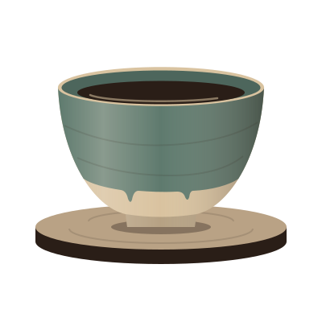
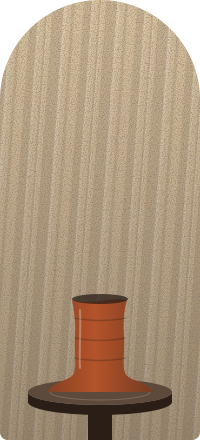

Faenza · caffè e bottega di ceramica
Il caffè in una tazza fatta ieri
Al banco, la mattina, c’è il ceramista. Le tazze escono dal forno qui dietro, e due uguali non ne troverai.
Oltre il muro, la bottega
Il caffè sta al piano terra di una vecchia bottega di ceramica. Di giorno sa di caffè, la sera di argilla bagnata e di forno caldo.
Le tazze le facciamo noi. Una è venuta un po’ storta, in un’altra lo smalto è colato dove voleva: va bene così. Scegli quella che ti sta bene in mano.
- 1 forno
- dietro il muro, lo accendiamo il giovedì
- 3 ceramisti
- ognuno col suo marchio
- 0
- tazze uguali sullo scaffale

IIl tornio gira dalle 7 
IILo smalto prima della cottura 
IIILo scaffale delle tazze finite
Un posto vicino al forno
Lascia nome e telefono: ti richiamiamo per confermare. Il tavolo vicino al forno lo teniamo 15 minuti.
Il posto è tuo
Questo è un sito di esempio: la richiesta non è stata inviata e nessuno ti richiamerà.
Come trovarci
Via delle Fornaci 9, a Faenza. Dal Ponte delle Torri sono dieci minuti a piedi. Cerca la porta con la targa di terracotta.
Percorso:Apple Mappe (si apre in una nuova scheda)Google Maps (si apre in una nuova scheda)
Cosa c’è sul tornio
Facciamo vedere le tazze nuove prima della cottura, annunciamo i corsi di ceramica e scriviamo quando il forno è vuoto.